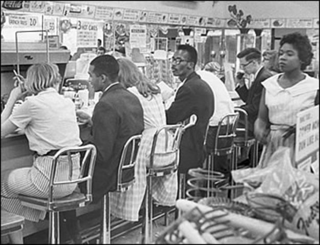
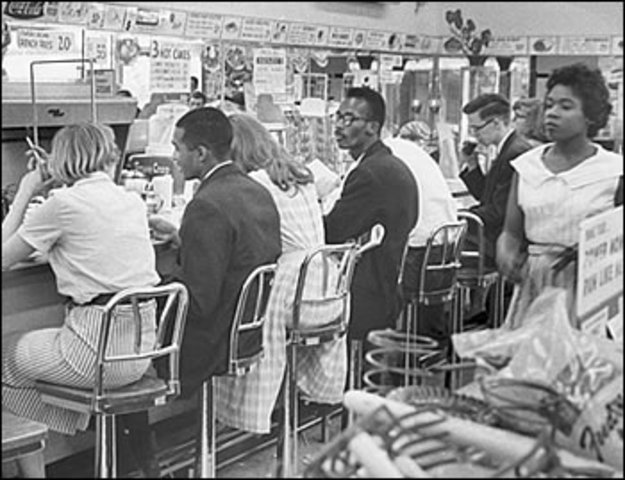

Introduction
Gibbons vs Ogden (1824) is a pivotal ruling from the Marshall Court that vastly expanded the power of Congress under the Commerce Clause. The Commerce Clause is found in Article 1, Section 8 of the Constitution and was included to address this issue by granting the Federal government the ability “to regulate commerce with foreign nations, and among the several states, and with the Indian tribes.” Prior to this clause, the byzantine structure of different states' laws created a weak national economy and hindered commercial growth. The Federal government was left helpless to address these issues due to the imbalance of power in favor of the States created by the Articles of Confederation.
In this court case, the Court determined that the Federal government’s laws supersede the state’s laws in regards to both the buying and selling of goods along with any “commercial intercourse.” This phrase was used by Chief Justice Marshall to indicate Congress not only had the authority to regulate buying and selling of goods but all activities related to the buying and selling of goods, like their shipping, and commercial activities that didn’t involve goods, like the transportation of people. By defining the Commerce Clause in these terms, John Marshall cemented his legacy as a nationalist and changed the course of American history forever, as seen in later uses of this case and the legal precedent it set.
The Supreme Court Case
Aaron Gibbons was a steamboat operator who worked for a company that was granted an exclusive, monopolistic license to operate steamboats in New York and interstate waterways by the New York legislature. During the same period, Thomas Gibbons was granted a license by the federal government to operate steamboats between New York and New Jersey. Ogden filed a complaint in a New York Court against Gibbons for operating steamboats in what Ogden viewed as waterways he had exclusive rights to. The New York court ruled in favor of Ogden and issued an injunction against Gibbons. On appeal, the higher New York court ruled again in favor of Ogden and upheld the injunction. Gibbons then appealed to the Supreme Court. Ogden’s side argued in front of the Supreme Court that states often pass laws regarding interstate commerce and should be allowed to make laws concurrently with the Federal government. Gibbons’ side argued that the Commerce Clause gave the Federal government the ability to overrule these state laws and therefore Gibbons should be allowed to operate his steamboats.
The Court ended up ruling unanimously in favor of Gibbons, using the reasoning that the Commerce Clause granted the Federal government authority over the States when it came to issues regarding interstate commerce. Chief Justice Marshall stated that the phrase “among the several states” implied that Congress had authority to regulate commerce within states that eventually leads to interstate commerce. He also went on to reason that commerce doesn’t merely encompass the buying and selling of physical goods, but all activities that go into it, and also non-physical commerce such as transporting people. By including these two legal definitions in his decision, Chief Justice Marshall vastly expanded the Federal government’s power over the States.
Modern Applications of the Commerce Clause
The Commerce Clause was defined in Ogden vs Gibbons to include anything that affected interstate commerce, even if it originated at the intrastate level. This legal precedent has been applied many different times but most notably was used to uphold the Civil Rights Act of 1964 in the case of Katzenblach vs McClung. In this case, McClung operated a restaurant directly off of an interstate highway in Birmingham, Alabama that discriminated against non-White customers. He received food and business from out of state due to his proximity to the Alabama border and a major highway. When he was barred from discriminating, he sued and argued that Congress did not have the authority to prevent discrimination since his business was too small to affect interstate commerce.
The lower Federal courts ruled in favor of McClung; however, the case continued to be appealed until it came before the Supreme Court. In a unanimous decision, the Court ruled that Congress was acting Constitutionally when it prevented McClung from discriminating. Their reasoning was that since McClung used food from out of state and served customers from out of state, he was participating in interstate commerce. They also reasoned that the Civil Rights Act was the Federal government’s way of relieving the discrimination that put unnecessary burdens on people of color who traveled in the South, which was again deemed to be interstate commerce. As established in Ogden vs Gibbons, Congress can be reasonably expected to reduce burdens on interstate commerce, even if they fall under the “commercial intercourse” umbrella.
 
